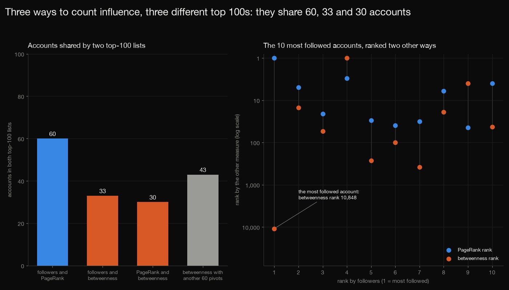
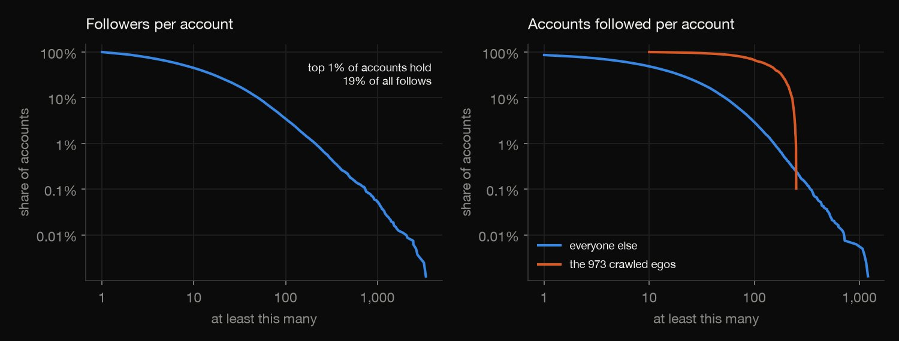
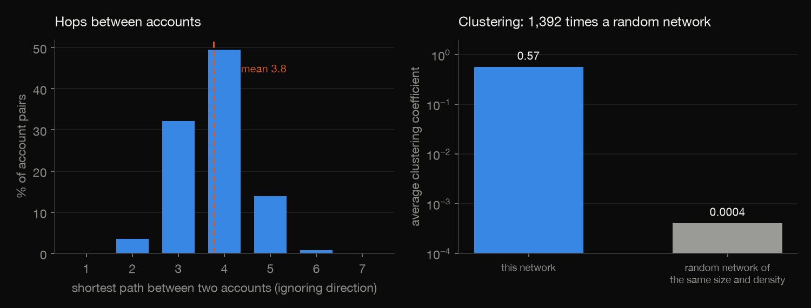
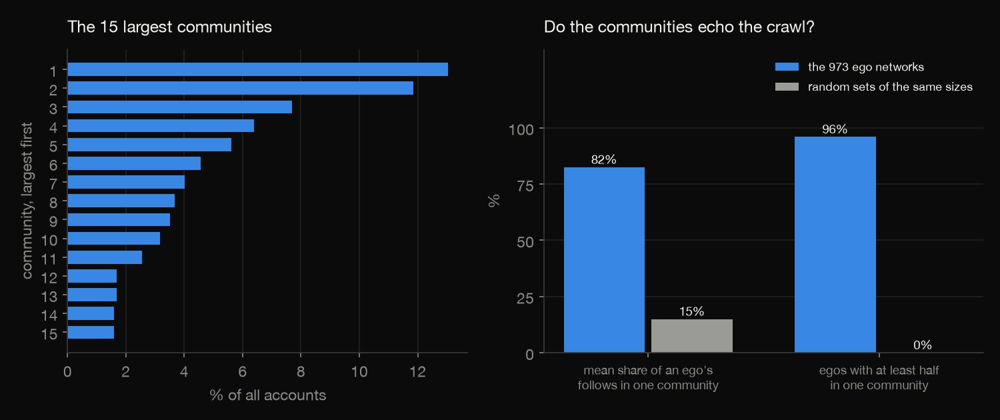
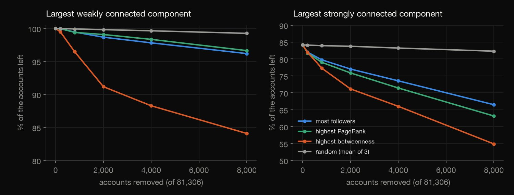

Python · Network analysis · 2026-10
Who Are the Influencers in a Twitter Network?
On a crawl of 81,306 Twitter accounts published in 2012, followers, PageRank and betweenness pick top-100 lists that share only 60, 33 and 30 accounts, the most followed account is 10,848th by betweenness, and removing the 8,000 highest-betweenness accounts leaves 84% of the rest in one weak component, against 99% at random.

A sample of Twitter as it was around 2012, not Twitter: "followers" are followers inside the sample, most accounts' follows are only partly recorded, and the 973 accounts the crawl started from are over-represented among the top accounts. None of the three measures is influence (there is no tweet or engagement data), betweenness comes from 120 pivot accounts and is rough, and Louvain is one algorithm whose communities partly follow the ego networks. SNAP states no licence and the node ids are Twitter's own, so nothing from the data is published or committed, no account is named, and only counts and summaries appear. Source: McAuley and Leskovec (2012), Stanford SNAP.
01 — The problem
Followers are the obvious way to spot the important accounts in a social network, but they are not the only way. In a real Twitter follow network, who are the influencers, do the usual measures agree on them, and how much does the network depend on them?
The task follows DataCamp's "Social Networks: A Twitter Network Analysis" (NetworkX: influencers, communities, topology). The data is Stanford SNAP's crawl of 81,306 accounts and 1,768,135 follows, published in 2012 as 973 ego networks glued together, so the page also asks how much of every answer is the crawl itself.
02 — What I built
One follow network, looked at five ways:
- The audit: repeated edges, self-follows, and how the crawl's 973 starting accounts differ from everyone else.
- The topology: degrees, reciprocity, triangles, clustering and distances.
- The influencers: followers, PageRank and betweenness, and how far their top lists agree.
- The communities: Louvain with three seeds, set against the crawl's ego networks.
- The attack: remove the top accounts by each measure, or at random, and watch the giant components.
- Check:
check.pyrecounts all 2,749 numbers in plain Python, with no graph library.
03 — How it was built
- 01
Download and audit
Two files from Stanford SNAP (about 33 MB, fetched and never committed): every ego network's follow edges glued together, and the 973 networks one by one. The combined file repeats an edge once for every ego network that contains it, and 14 accounts follow themselves; both are removed, and the ego files are compared with the combined file.
pairs = set(lines); loops = {p for p in pairs if p[0] == p[1]}; E = sorted(pairs - loops) - 02
Rank the influencers three ways
Followers in the sample (in-degree), PageRank with damping 0.85, and betweenness estimated from the shortest paths out of 120 fixed pivot accounts, in two disjoint sets of 60 so the estimate can be compared with itself. Ties are broken by account id after rounding the scores, so floating-point noise cannot reorder a list.
pr = nx.pagerank(G, alpha=ALPHA, tol=1e-14, max_iter=1000) - 03
Find the communities
Louvain on the undirected graph at resolution 1, with three seeds, to see how stable the communities are, and then a test of how far they simply reproduce the crawl's ego networks, against random sets of accounts of the same sizes.
parts = {s: nx.community.louvain_communities(U, seed=s, resolution=1) for s in SEEDS} - 04
Remove the influencers
The 200, 800, 2,000, 4,000 and 8,000 accounts ranked highest by each measure (ranked once, on the intact network) are removed, and so are random accounts in three fixed orders, and the largest weakly and strongly connected components are measured as a share of the accounts left.
for s in SEEDS: o = list(range(n)); random.Random(s).shuffle(o); rem[f"random {s}"] = np.array(o) - 05
Recount it all without the library
check.pyrebuilds the graph from the two files in plain Python and recomputes the audit, the degrees, triangles and clustering, the distances, PageRank by power iteration, betweenness with Brandes' algorithm from the same pivots, every ranking and overlap, the modularity and normalised mutual information of the stored partitions, the ego purity and every row of the attack table: 2,749 numbers.acc += (1.0 + delta[w]) / sigma[w]
04 — Results
The sample. 2,420,766 lines are 1,768,149 distinct follows (an edge in several ego networks is listed several times), 1,768,135 after the 14 accounts that follow themselves are dropped, among 81,306 accounts. The 973 egos the crawl started from are 1.2% of them. The crawl records everything an ego follows (on average 137.6 accounts) but only some of what others follow (on average 20.3), and "followers" means followers inside the sample.
Followers are very unequal. The median account has 8 followers, the mean is 21.7 and the most followed has 3,383. The top 1% of accounts hold 18.9% of all follows; 2,825 accounts have 100 or more followers and 10,217 have exactly one.

A small, tight world. Ignoring direction, two accounts are 3.76 hops apart on average (90% within 5, longest seen 7); by following follows from an account one reaches 85% of the network, in 4.8 hops on average. 48.2% of follows are returned. The average clustering coefficient is 0.5653, 1,392 times that of a random network of the same size and density, with 13,082,506 triangles; SNAP publishes 0.5653 and 13,082,506 for the same graph.

Three ways to count influence disagree. The table counts the accounts two top lists share, for the top 10, 100 and 1,000 (the last row compares betweenness from the two sets of pivot accounts, A and B). The 100 most followed and the 100 with the highest PageRank share 60; followers and betweenness share 33 and PageRank and betweenness 30. Followers and PageRank agree most (Spearman correlation 0.87 over all accounts); followers and betweenness correlate at 0.71.
| Lists compared | 10 | 100 | 1,000 |
|---|---|---|---|
| Followers, PageRank | 5 | 60 | 633 |
| Followers, betweenness | 2 | 33 | 355 |
| PageRank, betweenness | 3 | 30 | 342 |
| Betweenness, A and B | 6 | 43 | 720 |
Betweenness here is noisy: two disjoint sets of 60 pivot accounts give top-100 lists that share only 43 accounts, so it is a rough ranking at this sample size. The followers list shares 31 and 31 with the two sets, below the 43 that they share with each other, so the difference between the measures is real, but part of it is noise.
![Left: lines of the share of two top-k lists that is shared, for k from 10 to 1,000. Followers and PageRank rise from 50% to about 63%; followers and betweenness and PageRank and betweenness stay between 20% and 37%; two betweenness estimates from different pivot sets share between 43% and 72%. Right: bars of the share of each top list that are egos, for top 100 and top 1,000: followers 12% and 8%, PageRank 8% and 6%, betweenness 11% and 30%, accounts followed 0% and 37%, against egos being 1.2% of all accounts.](charts/02_influence.jpg)
The most followed account is not on the paths. The table is the ten most followed accounts, most followed first: Follows is how many accounts each follows in the sample, and PR and BC are its rank by PageRank and by betweenness. The top account has 3,383 followers, follows 1 account, is first by PageRank and 10,848th of 81,306 by betweenness: a shortest path can only pass through an account that itself follows someone. 8 of the 100 most followed follow fewer than 10 accounts in the sample and 23 of them rank below 1,000 by betweenness (non-egos' follows are only partly recorded, so some of this is the crawl).
| Followers | Follows | PR | BC |
|---|---|---|---|
| 3,383 | 1 | 1 | 10,848 |
| 3,216 | 119 | 5 | 15 |
| 2,735 | 105 | 21 | 54 |
| 2,647 | 1,111 | 3 | 1 |
| 2,471 | 64 | 30 | 267 |
| 2,462 | 51 | 39 | 99 |
| 2,133 | 6 | 32 | 384 |
| 2,074 | 224 | 6 | 19 |
| 1,905 | 1,158 | 44 | 4 |
| 1,707 | 172 | 4 | 43 |
Egos are over-represented. They are 1.2% of accounts but 12 of the 100 most followed, 8 of the top 100 by PageRank, 11 of the top 100 by betweenness, 301 of the top 1,000 by betweenness and 371 of the 1,000 that follow the most (right chart above).
Communities. Louvain finds 72 or 73 communities depending on the seed, with modularity 0.807 to 0.808; the largest holds 13.0% of the accounts and the second 11.8%. Two runs agree with a normalised mutual information of 0.87 to 0.88: the same broad structure, different details. The 100 accounts with the highest PageRank are concentrated: 44 are in the second-largest community and 12 in the largest. On average 82% of the accounts an ego follows sit in one community, against 15% for random sets of the same sizes, and 96% of egos have at least half of their follows in one community (random sets: 0%). The communities echo the ego networks; social structure and the crawl's design cannot be told apart here.

Targeted attacks. Removing 8,000 accounts (9.8%) at random leaves the largest weakly connected component with 99.3% of the accounts left; removing the 8,000 with the most followers or the highest PageRank leaves 96.2% and 96.6%, and removing the 8,000 with the highest betweenness leaves 84.1%. The strongly connected core, 84.1% of the accounts to start with, shrinks the same way: the table gives both after 8,000 removals, ranked once on the intact network.
| 8,000 removed | Weak | Strong |
|---|---|---|
| None | 100.0% | 84.1% |
| At random | 99.3% | 82.3% |
| Most followers | 96.2% | 66.5% |
| Highest PageRank | 96.6% | 63.1% |
| Highest betweenness | 84.1% | 54.9% |

05 — What I'd do next
- Use all 81,306 accounts as betweenness sources, or enough of them that two sample lists agree, to turn the rough betweenness ranking into a firm one.
- Rank the accounts again after each removal, as an adaptive attack would, and compare it with the one-shot ranking used here.
- Try another community algorithm and a different resolution, and test whether the communities survive when the ego networks are shuffled apart.